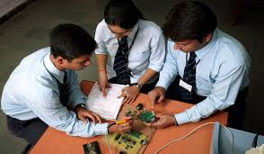
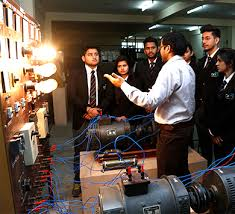
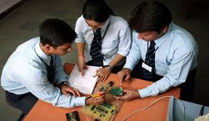
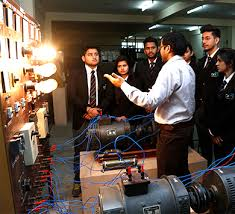

Department of Electronics and Communication Engineering
List of Current Faculty
1. Dr. Bhunesh Vyas
2. Ms. Manish Singal
3. Dr. Neha Mathur
4. Priyanka Yadav
5. Ms. Alka Yadav
6. Mr. Ankur Saharia
8. Mr. Ashok Kumar
9. Mr. Kalu Prajapat
10. Dr. Medha Gupta
11. Mr. Mohit Bajpai
12. Ms. Neelam Jangir
13. Ms. Nikita Gautam
14. Mr. Rahul Gupta
15. Ms. Rajni Sharma
16. Mr. Simranjeet Singh Sudan
17. Mr. Swapnil Jain
18. Ms. Timsy Kakkar
About Us
The development in the field of electronics and communication engineering is fundamental for the recent trends in the fields of Information Technology. Keeping this in mind and having excellence as our motto, the department of Electronics and communication engineering, with the able assistance of qualified and experienced faculty, imparts efficient training to the students. The department is equipped with sophisticated, modern, well-equipped Laboratories with adequate facilities. Keeping up with the pace of technology, our students are given the needed exposure with the emerging trends in the industry. The dedication of our faculty and the keen interest exhibited by our students has made it possible to achieve good results with University Ranks. The First year Core Curriculum begins with a common knowledge base and customizes Students by grounding in basic Engineering Foundation and in Critical Hands-on Skills in Engineering Practices. The Course has access to enhance the Learning, Student Perspective and Experience to develop Specialization in areas of 'Electronics and Communication Engineering'. Class room learning is complemented by practicals in Hi-Tech Labs, Projects and Hands on Experiences, so as to foster Knowledge in 'Engineering and Technology'. These laboratories provide platform for learning not only theory but also practical aspects of electronics and communication engineering.
vision
To create an environment in which new ideas, research and technology develop and the technocrats and innovators of tomorrow become competent to face the global challenges.
Mission
1. To develop competent professional with innovative mindset, problem solving, design and implementation skills through excellent education.
2. To provide platform so that undergraduates can expertise as a computer professional, entrepreneurs or as a manager while fulfilling their ethical and social responsibilities in a globally competitive environment.
3. To contribute significantly to the research and discovery of new arenas of methods and knowledge in the field of computer engineering.